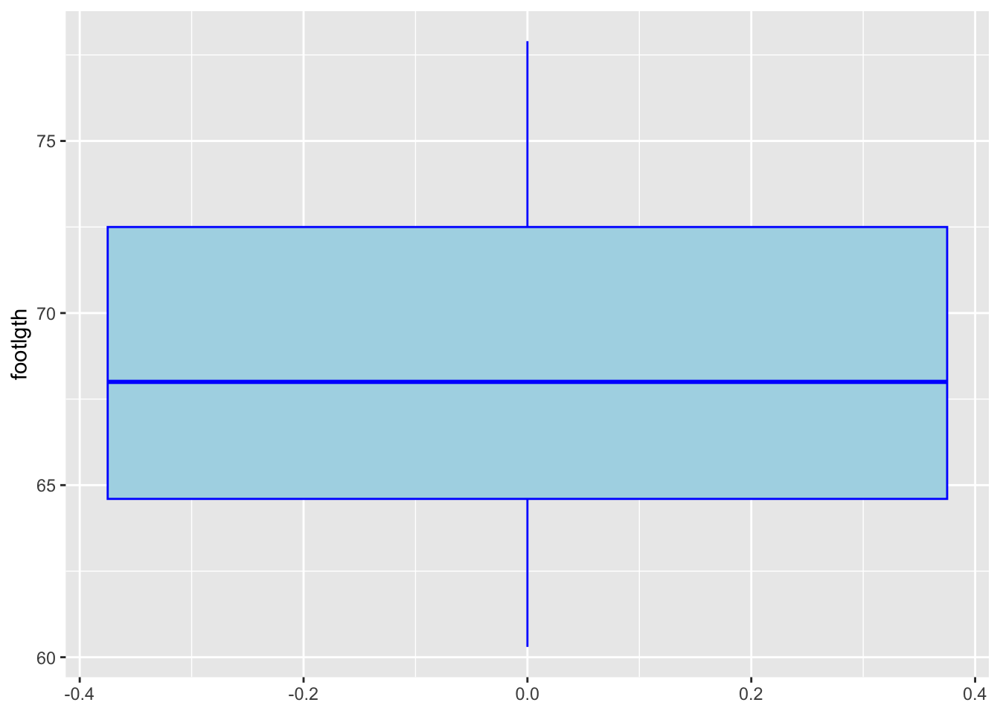
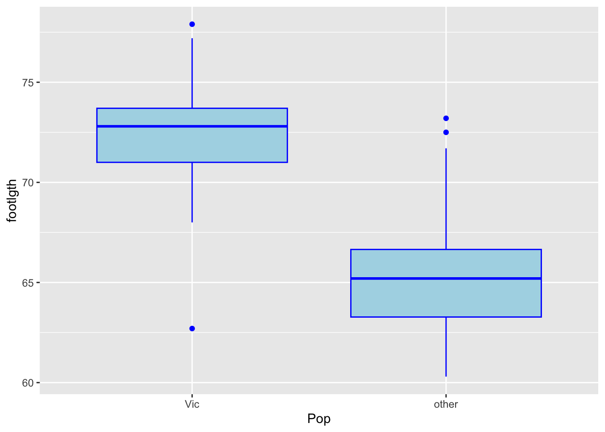
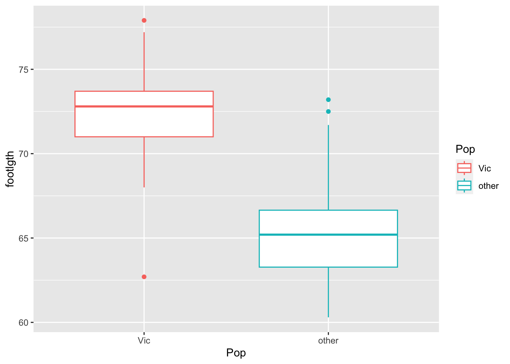
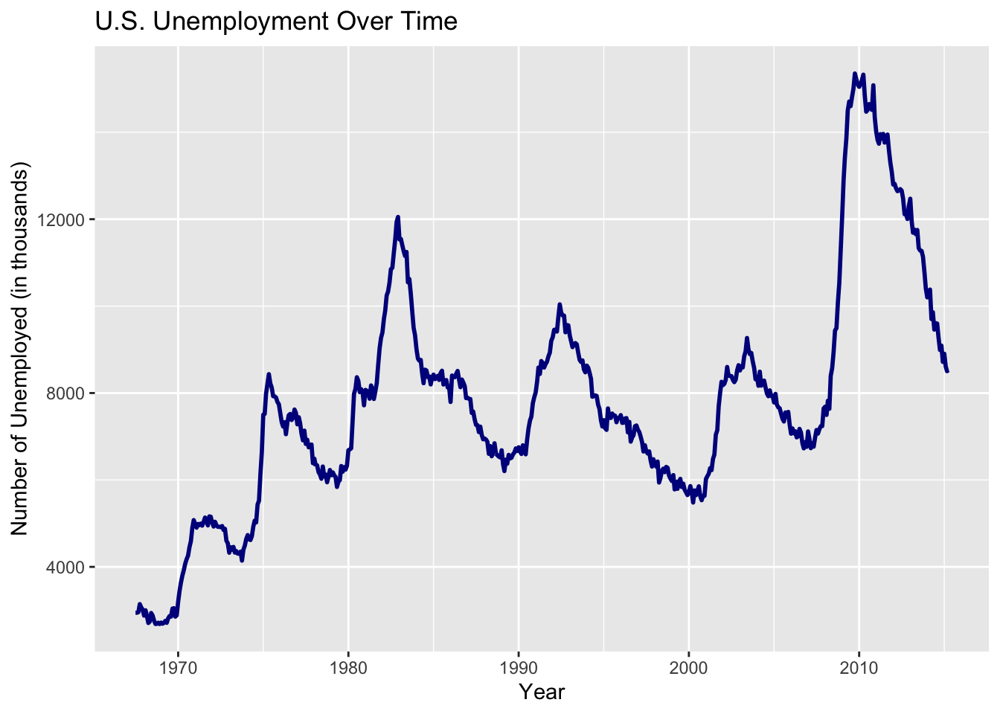

Making plots with ggplot2: histograms, boxplots, line graphs
Author
Emily Malcolm-White
# load packageslibrary(tidyverse)
possum data
The possum data frame consists of nine morphometric measurements on each of 104 mountain brushtail possums, trapped at seven Australian sites from Southern Victoria to central Queensland.
There are two different populations (pop): Vic (Victoria) and other (New South Wales or Queensland)
#Import the possum data againlibrary(DAAG)data("possum")
Histograms
Tip
Histograms are great for looking at the distributions of numeric variables
A boxplot for the footlength of all possums in this dataset:
The geom for boxplot. The color arguments makes the outline of the boxplot blue and the the fill argument shades the inside of the inner quartile range.

If only one boxplot, it puts weird numbers on the x axis, you may want to use the theme to hide these numbers.
Side-by-side boxplots are good for displaying one categorical variable and one numeric variable. One advantage of boxplots over bar plots is that they are able to show a bit about the spread and distribution of the numeric variable!
A side-by-side boxplot to compare the foot lengths between the two populations of possums:
# same color for both boxplotsggplot(possum, aes(y=footlgth, x=Pop)) +geom_boxplot(color="blue", fill="lightblue")

# different color for both boxplotsggplot(possum, aes(y=footlgth, x=Pop, color=Pop)) +geom_boxplot()

Line Graph
This dataset was produced from US economic time series data available from https://fred.stlouisfed.org/. Type ? economics to learn more.
data("economics")
Create a line plot with the unemployment rate of the US over time:
# Create a line plot of unemployment over timeggplot(economics, aes(x = date, y = unemploy)) +geom_line(color ="darkblue", size =1) +labs(title ="U.S. Unemployment Over Time",x ="Year",y ="Number of Unemployed (in thousands)" )

STAT 118: Intro to Data ScienceEMWplotting numeric data using scales, labels, jitter, lines of best fitbarplots and scatterplotsSTAT 118 Home1. Intro to R and R-StudioIntro to QuartoMarkdown Formatting & R Chunks2. Wrangling with dplyrWrangling BasicsAggregatingJoining tables with dplyr3. Making plots with ggplot2barplots and scatterplotsMaking plots with ggplot2: histograms, boxplots, line graphsplotting numeric data using scales, labels, jitter, lines of best fit4. Advanced Wrangling with tidyrreshaping data with tidyr5. Other Useful packagescategorical data using forcatsWorking with text with stringrWorking with dates using lubridateCleaning data using janitorAnimating plots using gganimate6. Maps7. Webscraping with rvestWebscraping TablesWebscraping TextSTAT 118: Data Science/courses/stat0118/index.htmlSTAT 116: Stats/courses/stat0116/index.htmlR by the Sea/courses/r-by-the-sea/index.htmlEmailmailto:emalcolmwhite@middlebury.eduMade by EMW (2025)Powered by Quarto3. Making plots with ggplot2Making plots with ggplot2: histograms, boxplots, line graphs
EMW - Making plots with ggplot2: histograms, boxplots, line graphsEMW - Making plots with ggplot2: histograms, boxplots, line graphsEMW - Making plots with ggplot2: histograms, boxplots, line graphsEMW
---title: "Making plots with ggplot2: histograms, boxplots, line graphs"author: 'Emily Malcolm-White'format: html: toc: TRUE code-overflow: wrap embed-resources: true code-tools: source: true toggle: false caption: none code-annotations: hover pdf: defaultexecute: message: FALSE warning: FALSE---quarto-executable-code-5450563D```r# load packageslibrary(tidyverse)```# `possum` dataThe possum data frame consists of nine morphometric measurements on each of 104 mountain brushtail possums, trapped at seven Australian sites from Southern Victoria to central Queensland.There are two different populations (`pop`): `Vic` (Victoria) and `other` (New South Wales or Queensland)quarto-executable-code-5450563D```r#Import the possum data againlibrary(DAAG)data("possum")```# Histograms:::callout-tipHistograms are great for looking at the distributions of numeric variables:::A boxplot for the footlength of all possums in this dataset: quarto-executable-code-5450563D```rggplot(possum, aes(x=footlgth)) +#<1> geom_histogram(binwidth=1) #<2>```1. only one x variable is needed2. you can adjust the binwidth, as needed# Boxplots:::callout-tipBoxplots are good for displaying the spread, central tendency, and distribution of one numeric variable. :::A lone box-plot for one numeric variable (foot length) with some custom colors: quarto-executable-code-5450563D```rggplot(possum, aes(y=footlgth)) +geom_boxplot(color="blue", fill="lightblue") #<1> ```1. The `geom` for boxplot. The `color` arguments makes the outline of the boxplot blue and the the `fill` argument shades the inside of the inner quartile range. :::{callout-tip}If only one boxplot, it puts weird numbers on the x axis, you may want to use the theme to hide these numbers. quarto-executable-code-5450563D```rggplot(possum, aes(y = footlgth)) +geom_boxplot(color ="blue", fill ="lightblue") +theme(axis.text.x =element_blank(), # Hide textaxis.ticks.x =element_blank(), # Hide tick marksaxis.title.x =element_blank() # Hide axis title )```::::::callout-tipSide-by-side boxplots are good for displaying one categorical variable and one numeric variable. One advantage of boxplots over bar plots is that they are able to show a bit about the spread and distribution of the numeric variable! :::A side-by-side boxplot to compare the foot lengths between the two populations of possums: quarto-executable-code-5450563D```r# same color for both boxplotsggplot(possum, aes(y=footlgth, x=Pop)) +geom_boxplot(color="blue", fill="lightblue")# different color for both boxplotsggplot(possum, aes(y=footlgth, x=Pop, color=Pop)) +geom_boxplot()```# Line GraphThis dataset was produced from US economic time series data available from [https://fred.stlouisfed.org/](https://fred.stlouisfed.org/). Type `? economics` to learn more. quarto-executable-code-5450563D```rdata("economics")```Create a line plot with the unemployment rate of the US over time: quarto-executable-code-5450563D```r# Create a line plot of unemployment over timeggplot(economics, aes(x = date, y = unemploy)) +geom_line(color ="darkblue", size =1) +labs(title ="U.S. Unemployment Over Time",x ="Year",y ="Number of Unemployed (in thousands)" ) ```